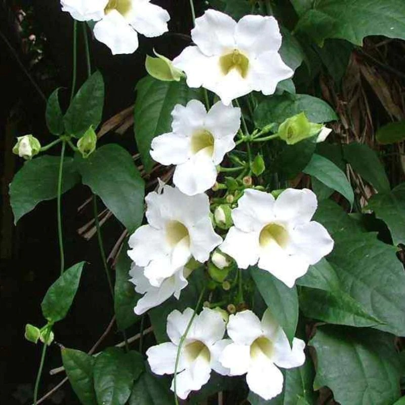

CREEPERS AND CLIMBERS
THUNBERGIA WHITE
Thunbergia white Botanically known as Thunbergia grandiflora alba from Acanthaceae family. Common names are Bengal clockvine, Bengal trumpet, white skyflower, white thunbergia, white trumpet vine, etc. It is a perennial semi-evergreen flowering vine & it requires trelling or chain like fencing or arbors for growing over it. It can be grown in big pots/containers and it have pure white color flower. Plants may grow to about 20 metres in height and have a long root system if planted in ground.